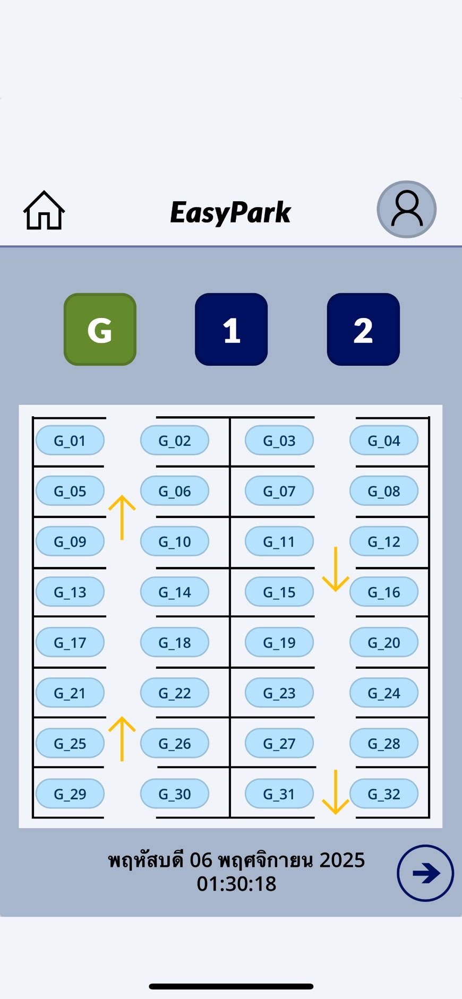

My Skills



EasyPark – Smart Parking Application
Developed a smart parking application called “EasyPark” that allows users to view and search for available parking spaces across multiple parking zones and floors. The application displays individual parking spaces and their current availability status through a simple and user-friendly interface.
Integrated the application with an Excel-based database to retrieve and manage parking information, including parking zones, floor levels, parking space numbers, and availability status. This project provided practical experience in application development, data management, Excel integration, and user interface design.